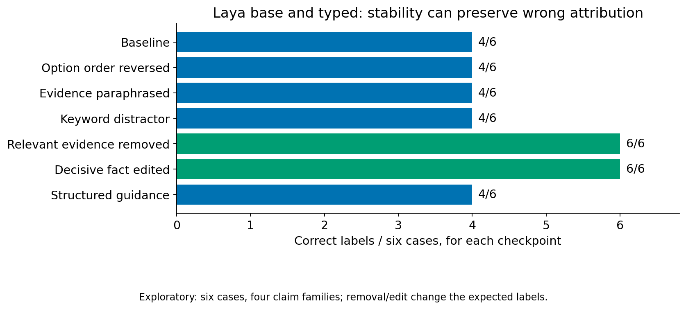

flowchart TD
accTitle: Prompt controls test stability and responsiveness
accDescr: Meaning-preserving prompt changes should leave the answer stable. An edit to decisive evidence changes what the evidence supports and should change the answer.
Prompt["Prompt condition"] --> Same["Meaning preserved"]
Same --> Stable["Expect stable answer"]
Edit["Decisive evidence edit"] --> Changed["Meaning changes"]
Changed --> Responsive["Expect changed answer"]
5. Keep the prompt branch open
I did not want dataset preparation to become an implicit decision to train. Another branch kept the checkpoint fixed and changed the request. This tests a different hypothesis: perhaps the model already has a useful distinction, but my interface fails to expose it. The branch can succeed on one task and fail on another. A blanket verdict about “prompt engineering” would erase that information.
The first controlled probe used six fictional cases, two checkpoints and eleven conditions: 132 decisions. Meaning-preserving changes included reordering, paraphrasing and adding irrelevant material. Evidence removal and decisive edits deliberately changed what the answer should be. These need opposite expectations: a good instrument should be stable under irrelevant changes and responsive to changes that alter support. Evidence E04
Both checkpoints were stable across the tested paraphrases and distractors, but each began with only four correct labels out of six. The persistent error was attribution. Evidence that Tomas owns a silver key does not deny that Mira owns a copper key. It leaves that claim unresolved. Both models answered denial, and explicit guidance did not fix it. Removing decisive evidence and making decisive edits worked on the simple controls. Stability and correctness had separated in a particularly useful way.
Diagram: The probe separates stability under paraphrases and distractors from responsiveness to evidence changes.

Figure: exploratory paired counts from six fixtures and four underlying claim families, not 132 independent examples. The transformations have different reference labels where meaning changes. This is a behavioral diagnostic, not a population accuracy estimate. See E04 for reference provenance and limitations.
A second probe used patterns from the public typed-decision training corpus to design fresh examples. Only TRAIN material was inspected; existing validation and test rows were not used. The current corpus revision was not independently linked to the exact cached training run. Its teacher labels were also not human truth. I used the corpus to form hypotheses about request structure, then evaluated newly authored inputs. Published corpus, Evidence E05
The 186 predictions comprised 156 main predictions and thirty tier-control predictions. Rewording an invoice reconciliation question moved base Laya from two correct cases out of four to four out of four. For typed Laya, meaningful invoice, order and delivery keys preserved four out of four; replacing them with generic field names reduced the result to two. Flattened prose retaining the semantic paths also achieved four. The evidence concerns semantic role information, not a demonstrated preference for JSON syntax.
Duplicate detection remained constant: base said yes to all four cases, typed said no to all four. Each matched two references but failed a different class. The published corpus’s negative-label imbalance was consistent with one possible explanation for typed behavior; it did not establish the cause. An exact comparator could solve these intentionally simple invoice cases. The experiment gave me a reason to preserve deterministic code, alongside a task-specific clue about wording.
flowchart TD
accTitle: Corpus patterns motivate fresh prompt probes
accDescr: Training material patterns motivate a hypothesis, which is tested on newly authored scenarios. Development cases support selection while confirmation cases are reserved.
Pattern["Training pattern"] --> Hypothesis["Prompt hypothesis"]
Hypothesis --> Fresh["Fresh scenarios"]
Fresh --> Development["Development selection"]
Development --> Confirmation["Reserved confirmation"]
Diagram: Corpus inspection shaped a hypothesis, while fresh development and reserved confirmation cases provide separate checks.
These fixtures were tiny and included near-replicates. The expanded study used fifty scenarios per task: invoice reconciliation, duplicate detection and evidence support. Ninety development cases received four fixed conditions across both checkpoints, producing 720 predictions. Selection was frozen before sixty confirmation cases received baseline and the selected condition, producing 180 predictions. References were independently model-reviewed synthetic labels. Confirmation contains fresh cases within ten shared mechanism patterns per task, not unseen mechanism families. Evidence E06
Development exposed useful contrasts without establishing a general recipe. Operational wording moved base invoice matching from 15/30 to 21/30: eight repairs and two regressions. The two regressions exceeded the registered gate, so that variant was not selected or tested in confirmation. Typed invoice matching instead fell from 17/30 to 15/30 under the same intervention. Base prose repaired five invoice cases and broke five, leaving 15/30 unchanged. An average alone would have hidden those opposing changes.
| Model/task and variant | Baseline /20 | Variant /20 |
|---|---|---|
| Base duplicates: prose | 10 | 10 |
| Base evidence: prose | 13 | 12 |
| Typed duplicates: operational wording | 11 | 12 |
The one confirmation repair was an exact invoice-ID/vendor pair in a three-entry history. Typed exact-pair recall improved only from 1/10 to 2/10; the descriptive clustered interval for the overall paired gain was zero to fifteen percentage points. Base evidence prose turned an unknown prerequisite into an unsupported conclusion: “If the switch is enabled, the sensor is active” does not establish activity when the switch state is unknown. The development gains for base duplicate and evidence prose did not recur as confirmation improvements.
The concrete contrasts give me testing heuristics. Name the intended operation, preserve semantic roles, and include near matches, wrong subjects, missing attributes and conflicting sources as controls. Count repairs, regressions and wrong-to-wrong flips separately. These are ways to diagnose prompts, not a winning prompt recipe. In development, both checkpoints handled every direct support, denial and negation example, but failed every missing-attribute and equal-authority conflict example. Familiar language cues may be easier to access than relational bookkeeping; this is a behavioral hypothesis, not an attention-level finding. Exact equality and arithmetic still favor deterministic comparators.
The discipline matters more than a favorable ending. Once I inspect an error and design a repair, that example becomes development evidence. Its paraphrases must stay in the same split. A larger count of related variants does not manufacture independent confirmation. These questions lead directly to the next branch: what should the reference answer mean?